Análisis Predictivo - Click-Through Rate#
Contexto del Proyecto#
El objetivo del proyecto es el de construir un modelo de clasificación supervisada usando MLP - (MultiLayer Perceptron) con el fin de predecir si un usuario hará clic en un anuncio móvil
Base de Datos: Click-Through Rate Prediction#
Origen#
El Dataset utilizado en este proyecto corresponde a Click-Through Rate Prediction, usado inicialmente en competencias de Kaggle con el fin de evaluar algoritmos para la predicción de clicks en publicidad digital.
Características#
Volumen: 40,428,967 registros de usuarios.
Variables: 24 variables.
Período: 11 días de información.
Completitud: No contamos con valores faltantes en el Dataset.
Variables analizadas#
id: Identificador único de cada impresión de anuncio. Cada fila del dataset representa una ocasión en la que un anuncio fue mostrado a un usuario.hour: Marca temporal del anuncio (formato: YYMMDDHH)banner_pos: Posición del banner en la página web.site_id: Identificador único del sitio web donde se mostró el anuncio.site_domain: Dominio del sitio web donde se muestra el anuncio.site_category: Categoría temática del sitio web.app_id: Identificador único de la aplicación móvil donde se mostró el anuncio.app_domain: Dominio asociado a la aplicación.app_category: Categoría de la aplicación.device_id: Identificador único del dispositivo.device_ip: Dirección IP del dispositivo que vio el anuncio.device_model: Modelo del dispositivo.device_type: Tipo de dispositivo.device_conn_type: Tipo de conexión de red del dispositivo.C1: variable categórica anonimizadaC14–C21: variables categóricas anónimas
Variable Objetivo#
click: indicador de si hubo clic
Importación de Librerías - Análisis exploratorio#
Se importan las librerías necesarias para el análisis que abarca la carga de datos, visualización y la transformación de datos.
import numpy as np
import pandas as pd
import matplotlib.pyplot as plt
import os
import seaborn as sns
import warnings
warnings.filterwarnings('ignore')
Lectura de Datos#
Para dar inicio al análisis, se procede a realizar la carga del conjunto de datos principal, el cual contiene información correspondiente a 40 millones de registros de clics en anuncios publicitarios. Posteriormente, con el objetivo de optimizar el proceso de exploración, se extrajo un subconjunto de los datos originales. Este subconjunto se utilizará como base para desarrollar el análisis exploratorio y modelado en Scikit-Learn.
try:
df = pd.read_csv(os.path.join(os.getcwd(), r'datos\train\train_sklearn.csv'))
except:
df_entero = pd.read_csv(os.path.join(os.getcwd(), r'datos\train\train.csv'))
df = df_entero.sample(n=1000000, random_state=42)
df.to_csv(os.path.join(os.getcwd(), r'datos\train\train_sklearn.csv'), index=False)
Cambio nombre de columnas#
Como parte del proceso de preparación de los datos, se procedió a modificar el nombre de las columnas del conjunto de datos, con el objetivo principal de estandarizar los nombres de las variables.
df.columns = df.columns.str.replace(' ', '_').str.lower()
df.columns
Index(['id', 'click', 'hour', 'c1', 'banner_pos', 'site_id', 'site_domain',
'site_category', 'app_id', 'app_domain', 'app_category', 'device_id',
'device_ip', 'device_model', 'device_type', 'device_conn_type', 'c14',
'c15', 'c16', 'c17', 'c18', 'c19', 'c20', 'c21'],
dtype='object')
Tamaño Dataframe#
Evaluamos la estructura y calidad inicial del dataset, observando número de filas y variables para el estudio del Dataset.
df.shape
(1000000, 24)
Dimensiones del subsample: Con 1,000,000 de registros y 24 variables, el subconjunto del dataset resulta representativo y manejable para llevar a cabo un análisis exploratorio robusto, permitiendo así, obtener conclusiones significativas del dataset original.
Datos faltantes#
Procedemos a identificar y cuantificar la presencia de valores ausentes en cada una de las variables.
df.isna().sum()
id 0
click 0
hour 0
c1 0
banner_pos 0
site_id 0
site_domain 0
site_category 0
app_id 0
app_domain 0
app_category 0
device_id 0
device_ip 0
device_model 0
device_type 0
device_conn_type 0
c14 0
c15 0
c16 0
c17 0
c18 0
c19 0
c20 0
c21 0
dtype: int64
Observamos que el subsample del Dataset no cuenta con valores faltantes en ninguna de sus variables.
Conversión a tipo de dato fecha#
Se identificó la variable hour, la cual contaba con información temporal y que requería ser convertida al tipo de dato fecha.
df['datetime'] = pd.to_datetime(df['hour'].astype(str), format='%y%m%d%H')
df['datetime'].dtype
dtype('<M8[ns]')
Extracción variables temporales#
Posteriormente, extraemos variables temporales específicas con el fin de analizar los datos con mayor detalle, para esto, creamos 4 nuevas variables que corresponden a: dia, mes, año, hour.
df['año'] = df['datetime'].dt.year
df['mes'] = df['datetime'].dt.month
df['dia'] = df['datetime'].dt.day
df['hour'] = df['datetime'].dt.hour
Encabezado Dataframe#
Observamos el encabezado del Dataframe con el fin de evaluar y visualizar los cambios realizados hasta ahora.
print(df.head().to_string())
id click hour c1 banner_pos site_id site_domain site_category app_id app_domain app_category device_id device_ip device_model device_type device_conn_type c14 c15 c16 c17 c18 c19 c20 c21 datetime año mes dia
0 1.219830e+19 0 19 1005 0 85f751fd c4e18dd6 50e219e0 98fed791 d9b5648e 0f2161f8 a99f214a fc723bb6 72a00661 1 0 20277 320 50 2281 3 47 100182 42 2014-10-23 19:00:00 2014 10 23
1 6.333857e+18 0 13 1005 0 1fbe01fe f3845767 28905ebd ecad2386 7801e8d9 07d7df22 a99f214a fc61627b 3bd9e8e7 1 0 15705 320 50 1722 0 35 -1 79 2014-10-24 13:00:00 2014 10 24
2 1.297881e+19 0 5 1005 0 1fbe01fe f3845767 28905ebd ecad2386 7801e8d9 07d7df22 a99f214a c646d2c8 1f0bc64f 1 0 20108 320 50 2299 2 1327 100084 52 2014-10-28 05:00:00 2014 10 28
3 6.644525e+18 0 11 1005 0 85f751fd c4e18dd6 50e219e0 1a32e234 2347f47a 0f2161f8 18991006 440979d3 421872ab 1 0 20170 300 50 2312 0 167 100079 16 2014-10-29 11:00:00 2014 10 29
4 4.572864e+18 0 20 1005 0 85f751fd c4e18dd6 50e219e0 3e2bf98d 2347f47a 0f2161f8 afeffc18 be9a7b07 8e39e528 1 2 22955 320 50 2655 2 38 -1 23 2014-10-28 20:00:00 2014 10 28
Tipos de Datos y cardinalidad#
Revisamos la estructura del dataset para entender qué tipo de información contiene cada vriable y cómo se distribuyen los valores dentro de ellas.
summary_df = pd.DataFrame({
"tipo dato": df.dtypes,
"valores únicos": df.nunique()
})
summary_df.sort_values(by='valores únicos', ascending=False)
| tipo dato | valores únicos | |
|---|---|---|
| id | float64 | 1000000 |
| device_ip | object | 555175 |
| device_id | object | 150215 |
| device_model | object | 5134 |
| app_id | object | 3169 |
| site_domain | object | 2856 |
| site_id | object | 2665 |
| c14 | int64 | 2243 |
| c17 | int64 | 422 |
| datetime | datetime64[ns] | 240 |
| app_domain | object | 201 |
| c20 | int64 | 164 |
| c19 | int64 | 67 |
| c21 | int64 | 60 |
| app_category | object | 27 |
| hour | int32 | 24 |
| site_category | object | 22 |
| dia | int32 | 10 |
| c16 | int64 | 9 |
| c15 | int64 | 8 |
| banner_pos | int64 | 7 |
| c1 | int64 | 7 |
| device_type | int64 | 5 |
| c18 | int64 | 4 |
| device_conn_type | int64 | 4 |
| click | int64 | 2 |
| año | int32 | 1 |
| mes | int32 | 1 |
Observamos que existen variables identificadoras de alta cardinalidad id, device_ip, device_id, app_id,site_id
Las variables anónimas, aunque codificadas como numéricas, corresponden a variables categóricas (códigos/identificadores).
Eliminar variables identificadoras#
Identificamos un conjunto de variables que funcionan principalmente como identificadores únicos o semiúnicos dentro del dataset. Las siguientes variables fueron excluídas del análisis:
id: Identificador único por registrodevice_ip: 555175 valores únicos, dada su alta variabilidad no resulta confiable como predictor.device_id: 150215 valores únicos, identificador con demasiadas categorías y poca consistencia.app_id: contamos con app_domain, la cual captura información similar.site_id: contamos con site_domain, la cual captura información similar.datetime: variable segmentada endia,mes,año,hour.
df = df.drop(columns=['id','device_id','device_ip','app_id','site_id','datetime'])
Verificamos cardinalidad y cambios realizados en el Dataframe#
summary_df = pd.DataFrame({
"tipo dato": df.dtypes,
"valores únicos": df.nunique()
})
summary_df.sort_values(by='valores únicos', ascending=False)
| tipo dato | valores únicos | |
|---|---|---|
| device_model | object | 5134 |
| site_domain | object | 2856 |
| c14 | int64 | 2243 |
| c17 | int64 | 422 |
| app_domain | object | 201 |
| c20 | int64 | 164 |
| c19 | int64 | 67 |
| c21 | int64 | 60 |
| app_category | object | 27 |
| hour | int32 | 24 |
| site_category | object | 22 |
| dia | int32 | 10 |
| c16 | int64 | 9 |
| c15 | int64 | 8 |
| banner_pos | int64 | 7 |
| c1 | int64 | 7 |
| device_type | int64 | 5 |
| device_conn_type | int64 | 4 |
| c18 | int64 | 4 |
| click | int64 | 2 |
| año | int32 | 1 |
| mes | int32 | 1 |
Dada la alta cardinalidad de las variables categóricas restantes, optamos por utilizar Target Encoding (codificación por objetivo) en lugar de One Hot Encoding. Esta técnica consiste en reemplazar cada categoría por el valor promedio de la variable objetivo para esa categoría, lo que evita la explosión dimensional que generaría One Hot Encoding y que aumentaría significativamente el costo computacional del entrenamiento. Adicionalmente, agruparemos las categorías raras para evitar estimaciones poco robustas de Target Enconding basadas en pocas observaciones.
Análisis univariado#
El Análisis Univariado es la primera fase del análisis exploratorio de datos. Se enfoca en el estudio individual de cada variable para entender su distribución, características y valores atípicos. Esto permite identificar patrones y la calidad de los datos antes de un análisis más complejo.
Distribuciones variables anonimizadas#
En primer lugar, centramos el análisis univariado en evaluar el comportamiento de las variables anónimas (c1, c14, c15, c16, c17, c18, c19, c20, c21). Para ello, examinamos sus distribuciones, frecuencias y posibles valores atípicos
variables_anon = ['c1','c14','c15','c16','c17','c18','c19','c20','c21']
df[variables_anon].describe()
| c1 | c14 | c15 | c16 | c17 | c18 | c19 | c20 | c21 | |
|---|---|---|---|---|---|---|---|---|---|
| count | 1000000.000000 | 1000000.000000 | 1000000.000000 | 1000000.000000 | 1000000.000000 | 1000000.000000 | 1000000.000000 | 1000000.000000 | 1000000.000000 |
| mean | 1004.969626 | 18843.081865 | 318.845060 | 60.074084 | 2112.820761 | 1.432153 | 227.187716 | 53199.200120 | 83.454754 |
| std | 1.096840 | 4957.409610 | 21.215482 | 47.301157 | 609.077867 | 1.327160 | 351.045853 | 49957.876504 | 70.325635 |
| min | 1001.000000 | 375.000000 | 120.000000 | 20.000000 | 112.000000 | 0.000000 | 33.000000 | -1.000000 | 1.000000 |
| 25% | 1005.000000 | 16920.000000 | 320.000000 | 50.000000 | 1863.000000 | 0.000000 | 35.000000 | -1.000000 | 23.000000 |
| 50% | 1005.000000 | 20346.000000 | 320.000000 | 50.000000 | 2323.000000 | 2.000000 | 39.000000 | 100048.000000 | 61.000000 |
| 75% | 1005.000000 | 21894.000000 | 320.000000 | 50.000000 | 2526.000000 | 3.000000 | 171.000000 | 100087.000000 | 101.000000 |
| max | 1012.000000 | 24044.000000 | 1024.000000 | 1024.000000 | 2757.000000 | 3.000000 | 1839.000000 | 100248.000000 | 255.000000 |
for var in variables_anon:
plt.figure(figsize=(6,4))
sns.kdeplot(data=df, x=var)
plt.title(f'Distribución variable anónima - {var}')
plt.xticks(rotation=45)
plt.show()
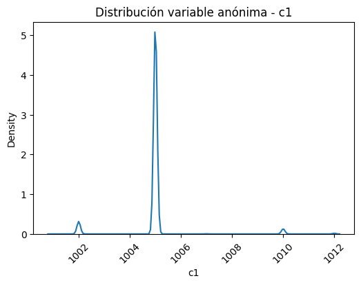
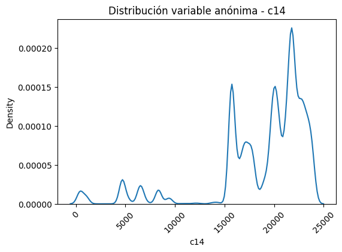
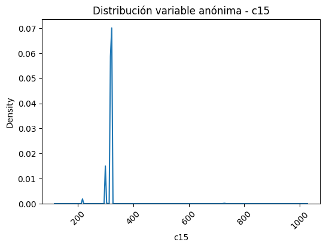
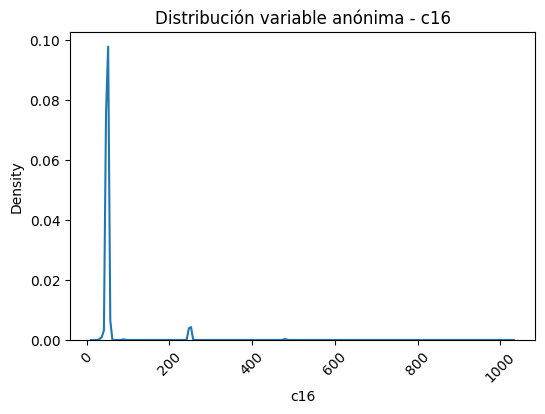
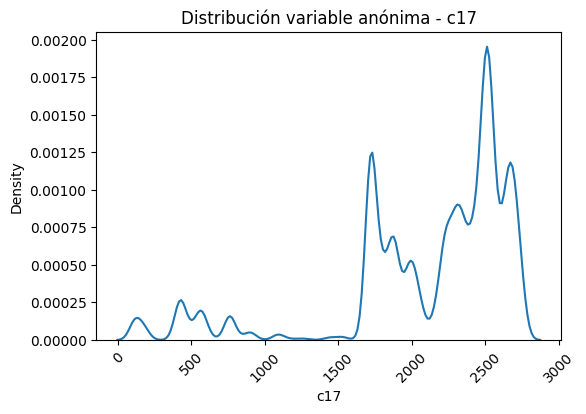
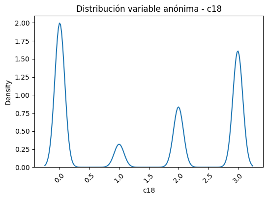
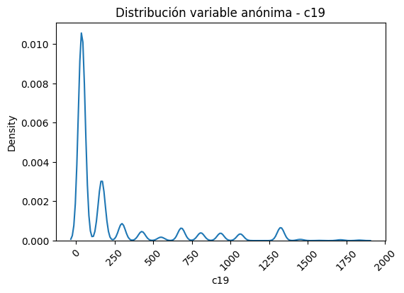
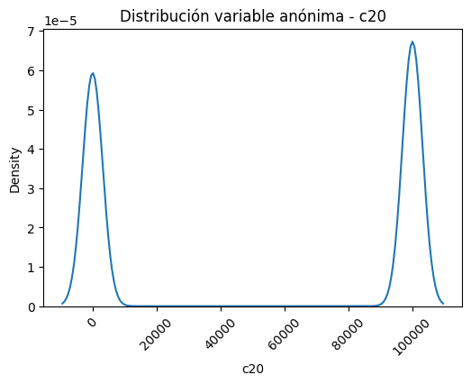
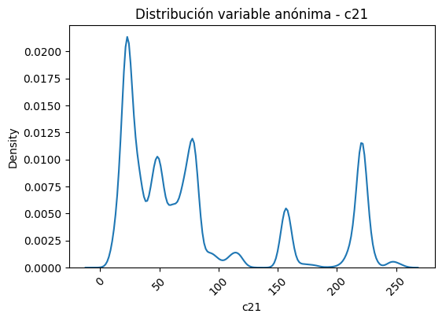
En el caso de las variables c1, c15, c16 y c20, observamos que la gran mayoría de las instancias se concentran en ciertos valores específicos. Esto sugiere, al menos para estas variables, un comportamiento típico de código o categorías predefinidas.
Por otro lado, variables como c14, c17, c19, c21 cuentan con rangos de valores más dispersos. Las variables c14 y c17, parecen tener distribuciones similares.
La variable c18, cuenta con 4 valores únicos.
Proporción de cada categoría#
De forma complementaria, calculamos la proporción de cada categoría en las variables anónimas. Esto nos permite identificar qué tan distribuidas están las categorías y qué valores que concentran la mayor parte de las observaciones. Como parte del modelado en Scikit-Learn, agruparemos categorías con menos de un 1% de observaciones en la categoría 'OTHER'.
for var in variables_anon:
print(f"Proporción valores únicos en {var}", len(df[var].unique()))
print(df[var].value_counts(normalize = True))
Proporción valores únicos en c1 7
c1
1005 0.918742
1002 0.054695
1010 0.022424
1012 0.002913
1007 0.000854
1001 0.000232
1008 0.000140
Name: proportion, dtype: float64
Proporción valores únicos en c14 2243
c14
4687 0.023452
21611 0.022674
21189 0.018759
21191 0.018611
19771 0.018165
...
22486 0.000001
23515 0.000001
18591 0.000001
12008 0.000001
12210 0.000001
Name: proportion, Length: 2243, dtype: float64
Proporción valores únicos en c15 8
c15
320 0.932837
300 0.057519
216 0.007641
728 0.001771
1024 0.000080
120 0.000066
480 0.000049
768 0.000037
Name: proportion, dtype: float64
Proporción valores únicos en c16 9
c16
50 0.943276
250 0.044517
36 0.007641
480 0.002563
90 0.001771
768 0.000080
20 0.000066
320 0.000049
1024 0.000037
Name: proportion, dtype: float64
Proporción valores únicos en c17 422
c17
1722 0.111877
2424 0.037370
2227 0.036619
1800 0.029578
423 0.023452
...
2448 0.000001
2521 0.000001
2447 0.000001
2585 0.000001
2651 0.000001
Name: proportion, Length: 422, dtype: float64
Proporción valores únicos en c18 4
c18
0 0.419669
3 0.338308
2 0.175206
1 0.066817
Name: proportion, dtype: float64
Proporción valores únicos en c19 67
c19
35 0.301461
39 0.217894
167 0.078089
161 0.038870
47 0.036160
...
683 0.000017
545 0.000007
677 0.000002
1447 0.000001
1195 0.000001
Name: proportion, Length: 67, dtype: float64
Proporción valores únicos en c20 164
c20
-1 0.468600
100084 0.060357
100148 0.044311
100111 0.042810
100077 0.039066
...
100138 0.000002
100100 0.000002
100078 0.000002
100246 0.000001
100157 0.000001
Name: proportion, Length: 164, dtype: float64
Proporción valores únicos en c21 60
c21
23 0.219969
221 0.125153
79 0.114398
48 0.053653
71 0.051714
61 0.051097
157 0.045986
32 0.043900
33 0.037120
52 0.029280
42 0.025241
51 0.021153
15 0.019035
212 0.016248
43 0.014472
117 0.010375
229 0.010075
13 0.009549
16 0.008552
156 0.008473
68 0.008017
159 0.007333
95 0.006802
46 0.005763
246 0.005050
69 0.004416
91 0.004316
17 0.004054
76 0.003433
111 0.003418
70 0.003208
90 0.003173
110 0.003026
171 0.002828
204 0.002302
101 0.002034
253 0.001937
112 0.001822
82 0.001686
100 0.001608
182 0.001225
178 0.001207
35 0.001140
108 0.001110
94 0.000547
251 0.000518
116 0.000377
194 0.000362
93 0.000306
20 0.000299
102 0.000212
104 0.000208
163 0.000178
126 0.000176
177 0.000151
255 0.000097
195 0.000092
1 0.000067
219 0.000041
85 0.000018
Name: proportion, dtype: float64
Matriz de correlación - Variables anónimas#
Para profundizar en el análisis de las variables anónimas, construimos una matriz de correlación que nos permita examinar las relaciones lineales entre ellas. Además de su relación con nuestra variable objetivo.
corr = df[variables_anon + ['click']].corr()
mask = np.triu(np.ones_like(corr, dtype=bool))
f, ax = plt.subplots(figsize=(11, 9))
cmap = sns.diverging_palette(230, 20, as_cmap=True)
sns.heatmap(corr, mask=mask, cmap=cmap, vmax=.3, center=0,
square=True, linewidths=.5, cbar_kws={"shrink": .5}, annot=True)
<Axes: >
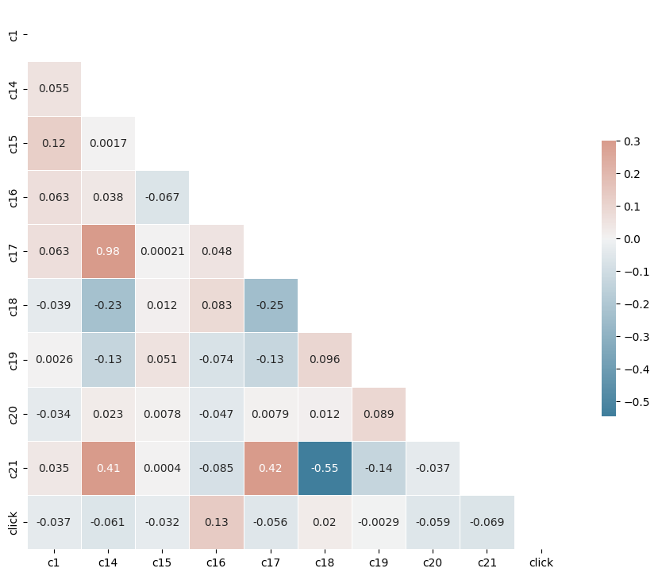
Con relación a los valores observados en la matriz de correlación. En primer lugar, observamos una baja correlación entre las variables anónimas y la variable objetivo click, lo que confirma que estas variables se comportan más como identificadores o códigos.
Correlaciones valiosas entre variables:
c14 vs c17| 0.98: Presentan una correlación muy alta de 0.98, redundancia entre ambas.c14 vs c21| 0.41: Correlación moderada positivac17 vs c21| 0.42: Mismo comportamiento observado en c14 vs c21c18 vs c21| -0.55: Destaca una correlación negativa moderada de -0.55, lo que señala una relación inversa
Distribución variables categóricas#
Procedemos a analizar la distribución de las variables categóricas presentes en el dataset, evaluando proprciones en valores únicos y concentraciones.
var_cat = ['device_model', 'site_domain', 'app_domain', 'app_category','site_category','banner_pos','device_type','device_conn_type']
for var in var_cat:
print(f"Proporción valores únicos en {var}", len(df[var].unique()))
print(df[var].value_counts(normalize = True))
unique counts of site_category 5134
device_model
8a4875bd 0.060749
1f0bc64f 0.034992
d787e91b 0.034705
76dc4769 0.019032
be6db1d7 0.018531
...
92f4ba26 0.000001
f105819b 0.000001
0a426b70 0.000001
0ad241a6 0.000001
ea7e24e9 0.000001
Name: proportion, Length: 5134, dtype: float64
unique counts of site_category 2856
site_domain
c4e18dd6 0.374018
f3845767 0.160469
7e091613 0.082353
7687a86e 0.031838
98572c79 0.024928
...
4a7c84c3 0.000001
556161c2 0.000001
15232937 0.000001
655cfaeb 0.000001
1d61eb21 0.000001
Name: proportion, Length: 2856, dtype: float64
unique counts of site_category 201
app_domain
7801e8d9 0.674205
2347f47a 0.129211
ae637522 0.045997
5c5a694b 0.027740
82e27996 0.018876
...
23e2c80e 0.000001
7ecafa37 0.000001
b6c7e8e1 0.000001
5ced45bd 0.000001
fd68cbd8 0.000001
Name: proportion, Length: 201, dtype: float64
unique counts of site_category 27
app_category
07d7df22 0.647600
0f2161f8 0.236210
cef3e649 0.042953
8ded1f7a 0.036077
f95efa07 0.028118
d1327cf5 0.003100
09481d60 0.001344
dc97ec06 0.001323
75d80bbe 0.001035
fc6fa53d 0.000636
4ce2e9fc 0.000519
879c24eb 0.000304
a3c42688 0.000256
4681bb9d 0.000168
0f9a328c 0.000150
a86a3e89 0.000061
8df2e842 0.000047
2281a340 0.000046
79f0b860 0.000015
0bfbc358 0.000011
7113d72a 0.000010
2fc4f2aa 0.000005
a7fd01ec 0.000004
5326cf99 0.000003
18b1e0be 0.000003
6fea3693 0.000001
71af18ce 0.000001
Name: proportion, dtype: float64
unique counts of site_category 22
site_category
50e219e0 0.408445
f028772b 0.313279
28905ebd 0.182775
3e814130 0.075437
f66779e6 0.006326
75fa27f6 0.003970
335d28a8 0.003420
76b2941d 0.002560
c0dd3be3 0.001065
72722551 0.000745
dedf689d 0.000587
70fb0e29 0.000566
0569f928 0.000439
8fd0aea4 0.000162
a818d37a 0.000079
42a36e14 0.000060
e787de0e 0.000034
bcf865d9 0.000022
9ccfa2ea 0.000014
5378d028 0.000011
da34532e 0.000003
c706e647 0.000001
Name: proportion, dtype: float64
unique counts of site_category 7
banner_pos
0 0.720070
1 0.278192
7 0.001066
2 0.000306
4 0.000177
5 0.000140
3 0.000049
Name: proportion, dtype: float64
unique counts of site_category 5
device_type
1 0.922880
0 0.054695
4 0.019212
5 0.003212
2 0.000001
Name: proportion, dtype: float64
unique counts of site_category 4
device_conn_type
0 0.863460
2 0.081945
3 0.053601
5 0.000994
Name: proportion, dtype: float64
for var in var_cat:
top10 = df[var].value_counts().head(10).reset_index()
top10.columns = [var, 'count']
plt.figure(figsize=(6,4))
sns.barplot(data=top10, x=var, y='count')
plt.title(f'Top 10 valores más frecuentes - {var}')
plt.xticks(rotation=45)
plt.show()
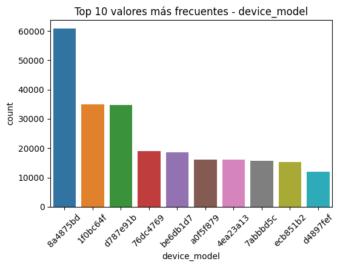
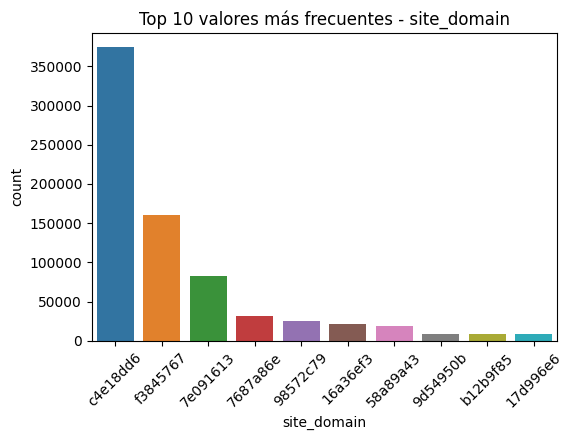
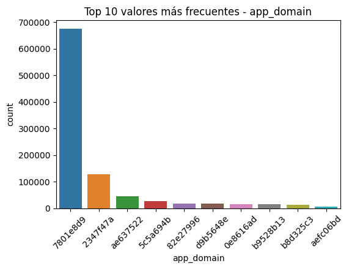
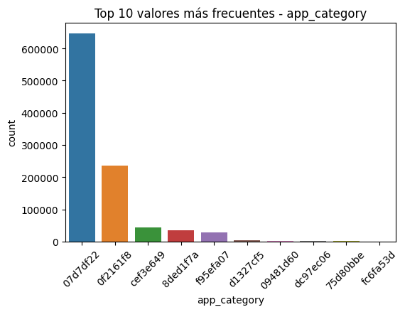
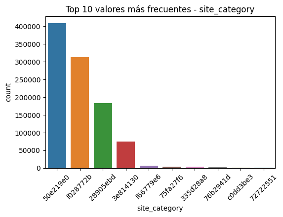
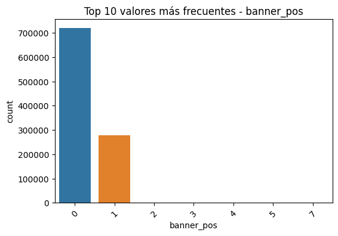
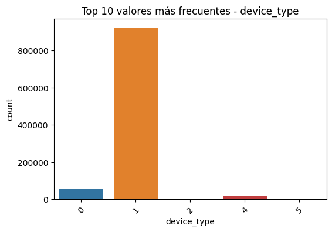
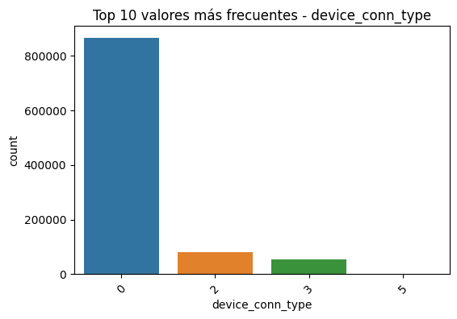
Al examinar la distribución de frecuencias para las variables con alta cardinalidad, podemos destacar los siguientes patrones:
device_model: Observamos que los 10 modelos de dispositivo más frecuentes tienen volúmenes de aparición relativamente equilibrados entre sí. Ninguno de ellos concentra una proporción abrumadoramente mayoritaria de los registros, lo que sugiere una diversidad considerable.site_domain: Aquí se evidencia una concentración mucho más marcada. El dominio principal acumula alrededor de 370,000 registros, superando ampliamente al segundo (160,000) y al resto.app_domain: El dominio de aplicación más frecuente concentra aproximadamente 680,000 registros, lo que representa más de dos tercios del total del subsample.app_category: La categoría de aplicación más frecuente también muestra una alta concentración, con un comportamiento parecido aapp_domain.site_category: Comportamiento parecido aapp_category, 400,000 registros la categoría principal.banner_pos,device_type,device_conn_type: Pocos valores únicos, concentraciones altas entre 2-3 valores.
Distribuciones variables temporales#
A continuación, procedemos a analizar el comportamiento de las variables temporales derivadas (hora, día, mes y año).
var_temporales = ['hour', 'dia', 'mes', 'año']
df[var_temporales].describe()
| hour | dia | mes | año | |
|---|---|---|---|---|
| count | 1000000.000000 | 1000000.000000 | 1000000.0 | 1000000.0 |
| mean | 11.274396 | 25.469938 | 10.0 | 2014.0 |
| std | 5.958183 | 2.963766 | 0.0 | 0.0 |
| min | 0.000000 | 21.000000 | 10.0 | 2014.0 |
| 25% | 6.000000 | 23.000000 | 10.0 | 2014.0 |
| 50% | 11.000000 | 26.000000 | 10.0 | 2014.0 |
| 75% | 16.000000 | 28.000000 | 10.0 | 2014.0 |
| max | 23.000000 | 30.000000 | 10.0 | 2014.0 |
for var in var_temporales:
plt.figure(figsize=(6,4))
sns.countplot(data=df, x=var)
plt.title(f'Distribución temporal - {var}')
plt.xticks(rotation=45)
plt.show()
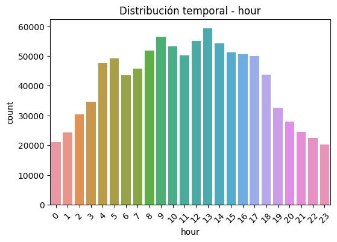
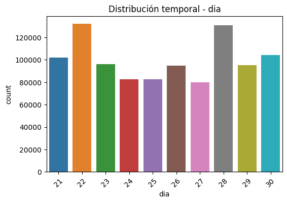
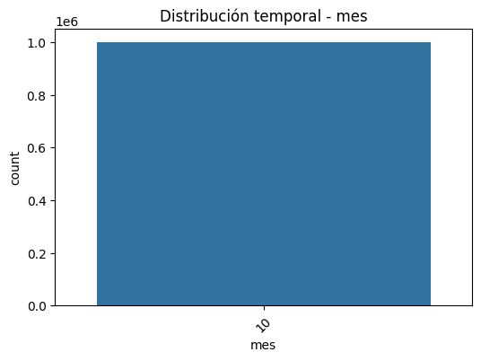
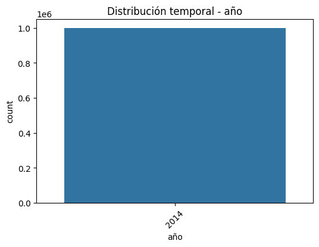
hour: La actividad por horas muestra un comportamiento esperado de usuarios activos durante el día. La mayor actividad de usuarios se presenta durante las 7 y las 17 horas, con picos que rondan los 60,000 registros en estas horas centrales. Por el contrario, las horas de madrugada (entre las 0 y las 6 horas) presentan la actividades más bajas, con valores que rondan los 20,000 registrosdia: En los días analizados (del 21 al 30), observamos fluctuaciones significativas. Los días 22 y 28 concentran los volúmenes más altos, superando los 130,000 usuarios activos, mientras que el día 27 presenta el registro más bajo, cercano a 80,000. Estas variaciones podrían estar asociadas a días específicos de la semana.mes,año: Las gráficas de mes y año no aportan información relevante, dado que el dataset contempla únicamente registros del mes de Noviembre en el año 2014.
Para el modelado final excluiremos las variables año, mes, dia , dado que cuentan con pocas categorías que no añaden valor predictivo al modelo.
Distribución variable Objetivo#
Procedemos a observar la distribución de nuestra variable objetivo.
df['click'].value_counts(normalize = True)
click
0 0.830263
1 0.169737
Name: proportion, dtype: float64
sns.catplot(data=df, x='click', kind='count')
<seaborn.axisgrid.FacetGrid at 0x225184b69a0>
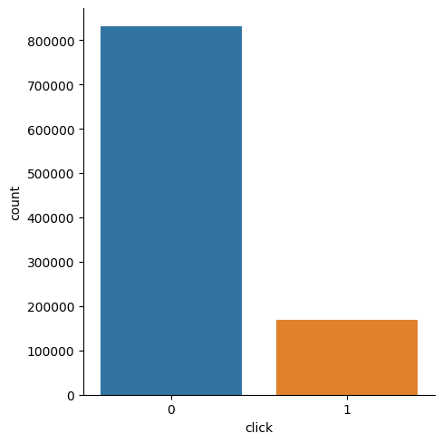
Observamos un alto desbalance de clases, favoreciendo la clase de 'no click' con 83% de los registros, 'click' 17% de los registros.
Análisis Bivariado#
Distribución click con respecto a hora#
Estudiamos la relación de entre click y hora del día.
plt.figure(figsize=(6,4))
sns.catplot(data=df, x='hour', kind='count', hue='click')
plt.title(f'Distribución temporal click por hora')
plt.xticks(rotation=45)
plt.show()
<Figure size 600x400 with 0 Axes>
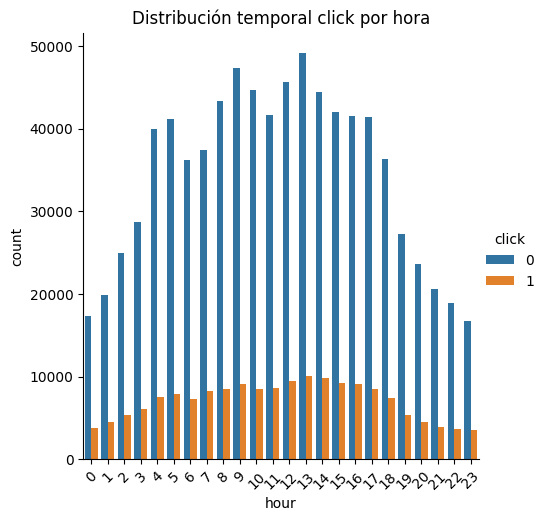
Tasa de clicks por hora#
ctr_hour = df.groupby('hour')['click'].mean() * 100
print(ctr_hour)
hour
0 17.697228
1 18.605988
2 17.476081
3 17.383662
4 15.837628
5 16.172276
6 16.691234
7 18.002234
8 16.415808
9 16.113543
10 16.011130
11 17.046924
12 17.117902
13 17.067494
14 18.133265
15 17.974437
16 18.081013
17 17.088608
18 16.837294
19 16.294018
20 15.944096
21 16.007025
22 16.122594
23 17.435999
Name: click, dtype: float64
Las horas de 0 a 3 am cuentan tasas de clicks altas (17-18%). Lo que podría indicar que los usuarios que navegan de madrugada son más propensos a hacer clic, se observa un segundo pico a las 7 horas (18%), este grupo pertenece al de personas que revisan sus dispositivos al despertar. Por último, se observa un tercer pico de las 2 a 5 pm (17-18%), estas horas están asociadas comunmente con horas de descanso laboral.
Las dos horas que cuentan con menor tasa de clicks corresponden a las 4 am y 8 pm (15%). Este comportamiento podría estar asociado a desconexión nocturna y relacionado con horarios de cena (8 pm)
Relación variable click, con variables anónimas#
Evaluamos el comportamiento de clicks con relación a la distribución de variables anónimas
for var in variables_anon:
fig, axes = plt.subplots(1, 2, figsize=(15, 4))
fig.suptitle(f'Análisis de {var} vs click', fontsize=13)
sns.boxplot(data=df, x='click', y=var, ax=axes[0])
sns.kdeplot(data=df, x=var, hue='click', ax=axes[1])
plt.tight_layout()
plt.show()
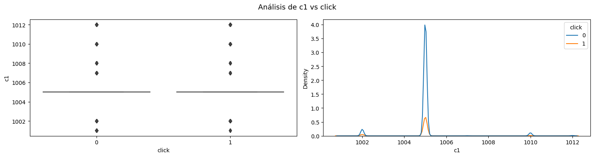
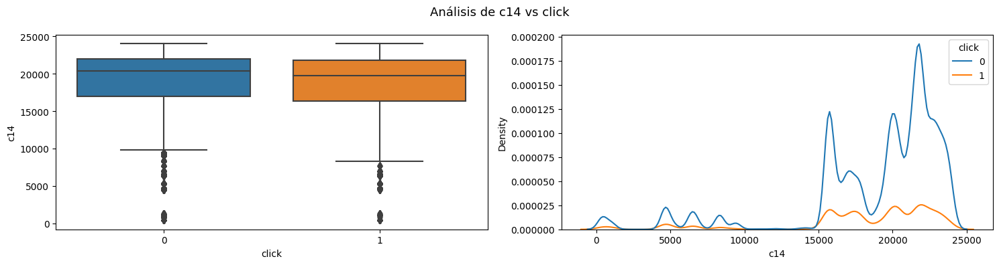
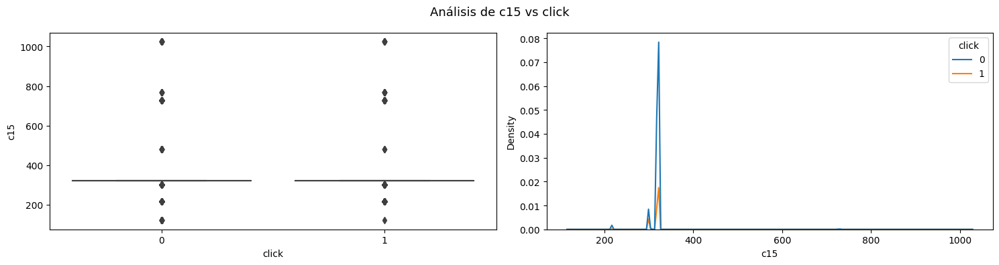
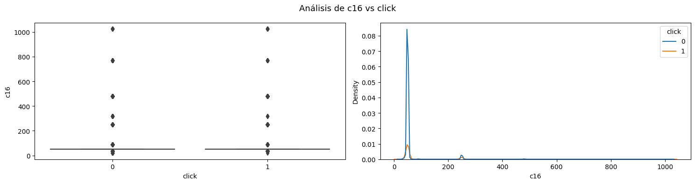
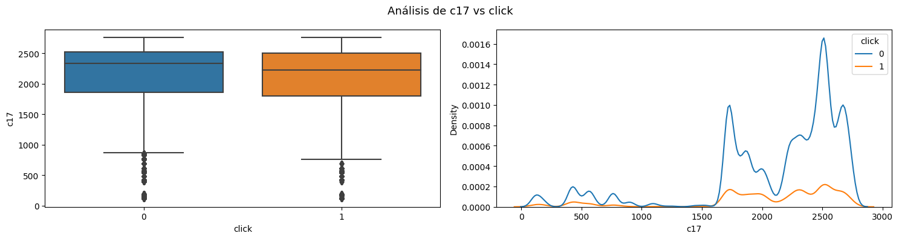
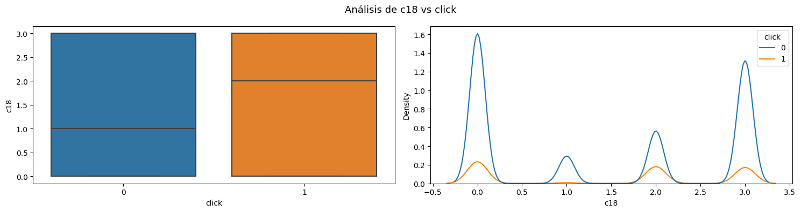
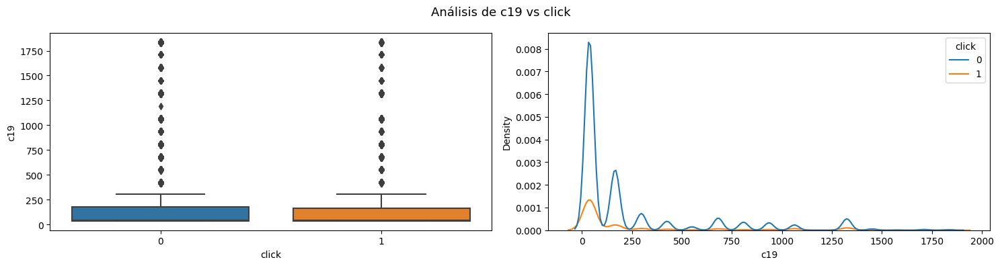
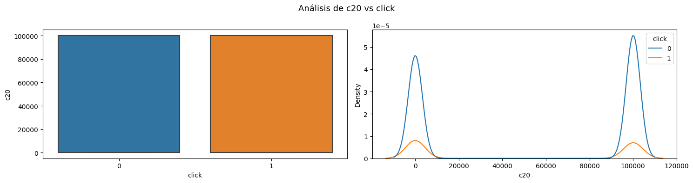
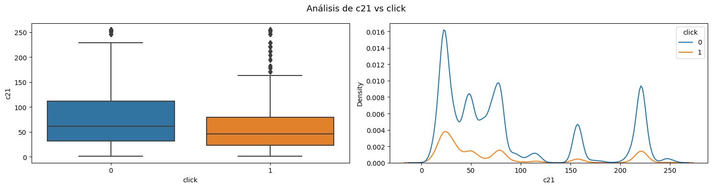
La distribución de la variables anónimas es similar para las observaciones con y sin click. Los picos de densidad se presentan en los mismos valores para ambas clases, lo que sugiere que la presencia de clicks sigue principalmente la distribución general de las impresiones. Este hallazgo sugiere que, de manera individual, estas variables no discriminan claramente entre las clases y su aporte al modelo podría manifestarse a través de interacciones con otras variables, captando relaciones no lineales.
Relación variables categóricas con variable click#
Relación entre variables categóricas no anónimas y variable click.
for var in var_cat:
top10 = df[var].value_counts().head(10).index
subset = df[df[var].isin(top10)]
plt.figure(figsize=(6,4))
sns.catplot(data=subset, x=var, kind='count', hue='click')
plt.title(f'Distribución click por {var}' )
plt.xticks(rotation=45)
plt.show()
<Figure size 600x400 with 0 Axes>
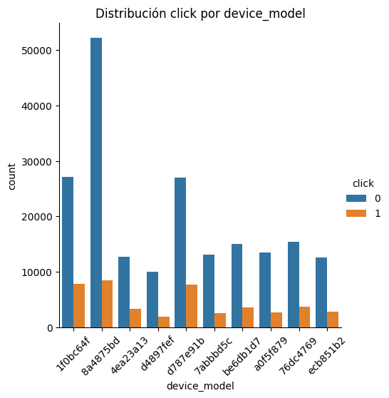
<Figure size 600x400 with 0 Axes>
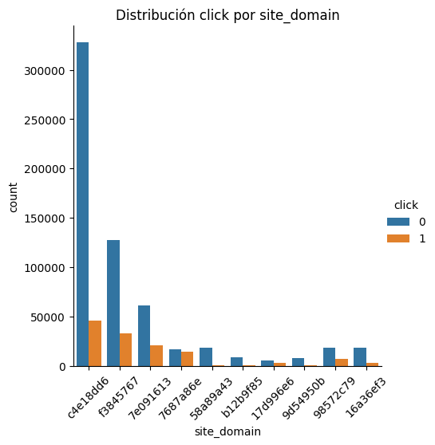
<Figure size 600x400 with 0 Axes>
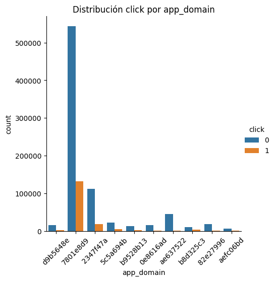
<Figure size 600x400 with 0 Axes>
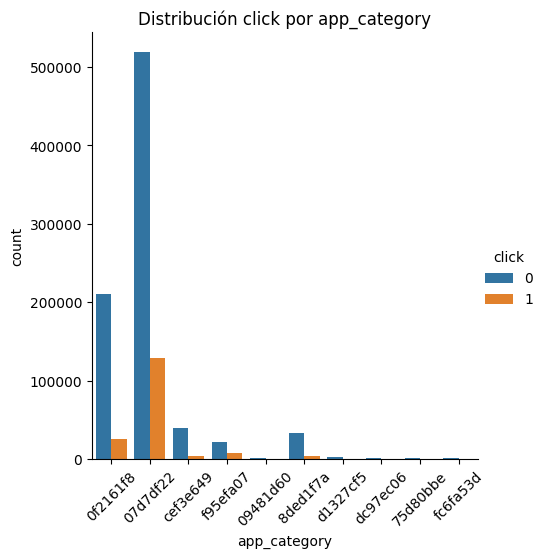
<Figure size 600x400 with 0 Axes>
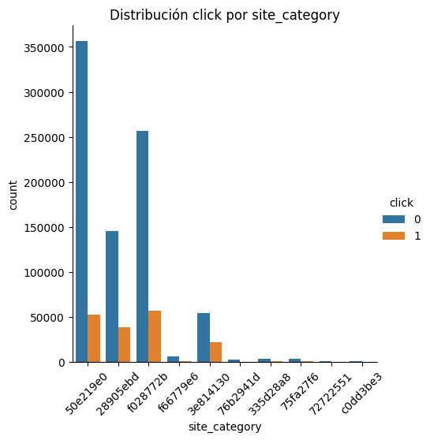
<Figure size 600x400 with 0 Axes>
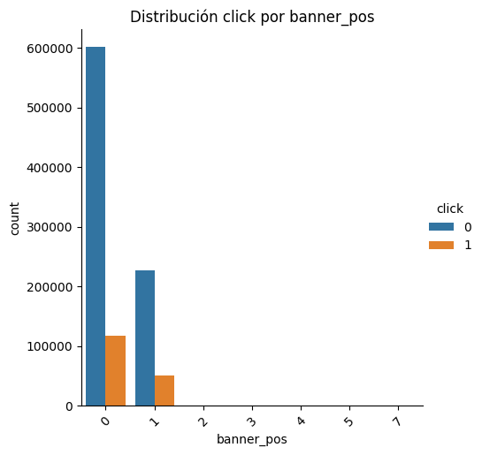
<Figure size 600x400 with 0 Axes>
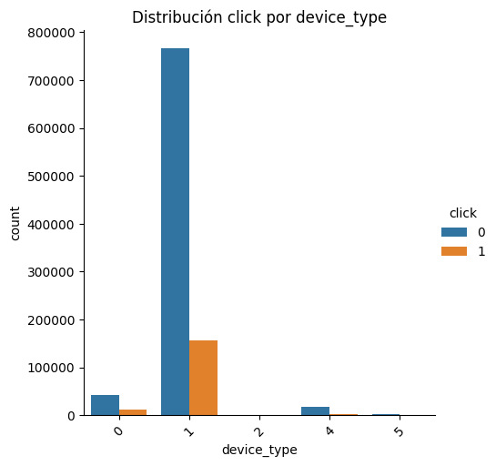
<Figure size 600x400 with 0 Axes>
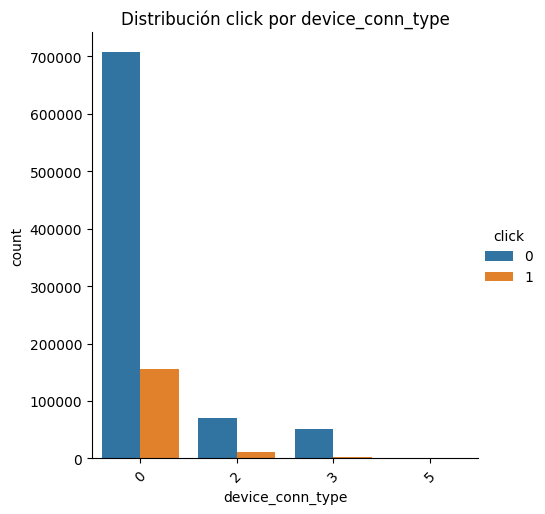
Caso similar a las variables anónimas. Al analizar los conteos absolutos, no se observan diferencias claras entre las clases que permitan identificar categorías específicas con una mayor propensión al click.
Guardado del Dataframe para uso en Sklearn#
df.to_csv(os.path.join(os.getcwd(), r'datos\train\train_sklearn_model.csv'), index=False)
Conclusiones#
Variables identificadoras: Se eliminaron aquellas columnas que funcionaban como identificadores únicos (
id,device_ip,device_id,app_id,site_id), ya que no aportaban valor predictivo y podían generar ruido en el modelo.Variables temporales: La variable
hourmostró un patrón claro de estacionalidad diurna, con tasas de clics más altas en horarios específicos (madrugada, mañana temprano y tarde). En cambio,dia,mesyañoserán excluidas dado que el período analizado no permite extraer patrones útiles a partir de ellas.Variables anónimas y categóricas: La mayoría presentan distribuciones son similares entre clicks y no clicks, lo que sugiere que la contribución de estas variables al modelo podría manifestarse principalmente a través de interacciones no linales. Además, eliminaremos la variable
c14, ya que presenta una alta correlación con la variablec17. Este nivel de correlación indica que ambas variables contienen información redundante y por lo tanto, describen patrones muy similares dentro del conjunto de datos.
Modelado#
Procederemos a la etapa de modelado utilizando dos enfoques complementarios:
En Scikit-learn:
Aplicaremos
Target Encodingpara codificar las variables categóricas, reemplazando cada categoría por la tasa de clics promedio correspondiente.Para evitar estimaciones extremadamente bajas o altas en aquellas categorías con pocas observaciones, agruparemos las categorías raras (aquellas con frecuencia baja) antes de la codificación.
En PySpark:
Dado que PySpark no cuenta con una implementación nativa de Target Encoding, utilizaremos un enfoque alternativo:
StringIndexerpara convertir las variables categóricas en índices numéricos.